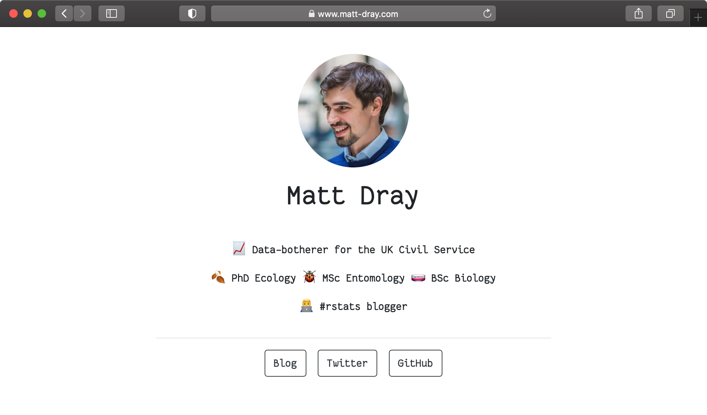
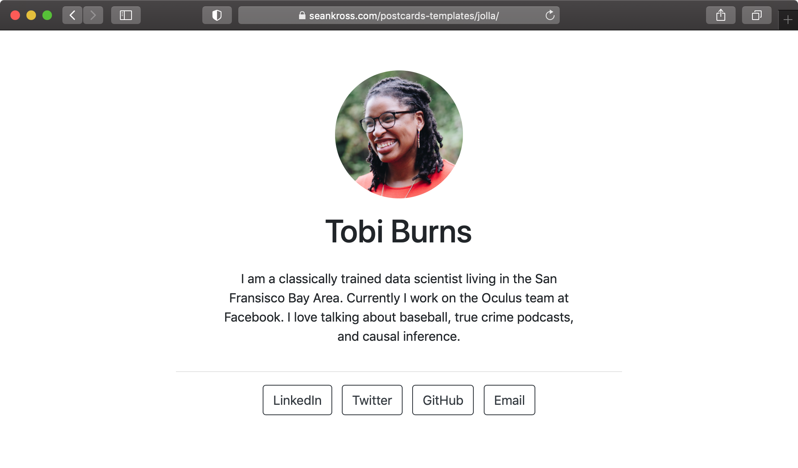
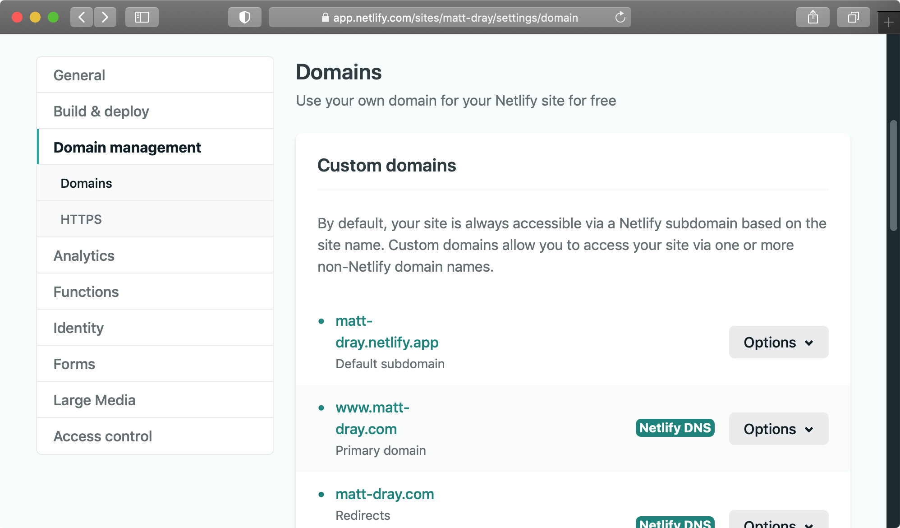

remotes::install_github("seankross/postcards")
tl;dr
Dearest ma and pa,
The food here is okay. Mostly I’ve been setting up a single-page personal site with the {postcards} package for R, deploying it with Netlify and setting up a custom domain with Namecheap. More rain is forecast for tomorrow.
Wish you were here,
Matthew
Domain-driven development
A hobby of mine is to look for funny domain names and to not buy them.
Eventually I realised that matt-dray.com wasn’t taken, so I figured I might as well squat it and do something pseudo-useful with it.1
Yes, I could write some HTML2 and CSS to make a complicated shrine to self-absorption, but why bother trying to center divs when Sean Kross has just announced the {postcards} R package to create nice, minimal landing pages?
This post is a short self-reminder of how to:
- Generate a webpage with {postcards}
- Deploy it with Netlify
- Point to it with a custom domain from Namecheap
This post isn’t about the tubes and wires of the internet. It’s more the how than the why.
Write a postcard
{postcards} provides some R Markdown templates that contain space for a photo, a mini-bio and some buttons to link out to your profiles elsewhere. See the package’s readme for examples.
You can install the development version from GitHub:
I generated an R Markdown file with the ‘Jolla’ template using the following line:
rmarkdown::draft("index.Rmd", "Jolla", package = "postcards")Note that the file is called index.Rmd and will thus render to index.html. This is the default file that gets read when a site is visited.
In the YAML header of the template you can specify a title, which is likely to be your name; the output format, which is the name for our chosen {postcards} template; links, where you specify the wording and underlying links for the page’s buttons; image for your bokeh-rich professional headshot and favicon for the little image that will appear alongside your page title in a browser tab.
---
title: "Matt Dray"
image: "matt.jpg"
links:
- Blog: "https://www.rostrum.blog/"
- Twitter: "https://twitter.com/mattdray/"
- GitHub: "https://github.com/matt-dray/"
output:
postcards::jolla
favicon: favicon.gif
---You can then write your mini bio in the body text of the document. I garnished mine with emoji via Hadley Wickham’s {emo} package.
The {postcards} templates are ready to go out of the box but you can still tinker with the style. I decided to pull in a font, Fantasque Sans Mono by Jany Belluz3, and put a CSS chunk in the R Markdown to specify it.

The content and design of my page may change at any time, but I purposefully want it to be minimal and have a clean and simple appearance. The {postcards} package is also in development, so I look forward to testing out any new features that appear in future.
Pop it in the post
You could put your site’s files in a GitHub repo and serve it with GitHub Pages. Upside: it’s free. Downside: your URL will be in the form username.github.io/your-postcard-repo, which isn’t particularly sleek.
Instead you could use a free service like Netlify to deploy a site from a GitHub/GitLab/BitBucket repository and set up a custom domain to point at it. I’ve had prior success with Netlify for this blog, so that’s why I’m using it here.
A bonus of this approach is continuous deployment: pushing changes to your repo causes Netlify to rebuild and deploy your site automatically, so you don’t need to worry about it.
To set up my page, I signed into Netlify and I:
- clicked the ‘New site from Git’ button
- clicked ‘GitHub’ in section ‘1. Connect to Git provider’, because that’s where my {postcards} repo is stored
- selected my
github.com/matt-dray/postcard/repo in section ‘2. Pick a repository’ after authorising Netlify to connect to to it - left the ‘build command’ empty in section ‘3. Build options and deploy!’ and set the ‘publish directory’ to ‘/’ (because I want to serve
index.htmlfrom the root of the repo) - clicked ‘deploy site’
Netlify takes a moment to build and serve the site after you click ‘deploy site’. It’s served automatically from a URL in the form random-name.netlify.app4 but, as mentioned, you can configure a privately-owned domain name instead.
For more on these steps, including screenshots, see Netlify’s step-by-step guidance on deploying static and single-page sites.
It’s also worth mentioning Netlify Drop: a service that lets you simply drag and drop your site’s files to deploy them, rather than needing to authorise Netlify to connect to your Git-based repo. This is quick and technically easier, but you’ll have to drag and drop each time you want to update the site.
Address it properly
There’s a whole bunch of domain-name providers. I’m focusing here on Namecheap, which is what I used to for this blog. After buying a domain, there’s a little bit of back-and-forth required between Netlify and Namecheap.
In brief:
- In your Namecheap account, click the ‘Manage’ button for your domain and set the dropdown in the ‘Nameservers’ section to ‘Custom DNS’
- In your Namecheap account, click ‘Set up a custom domain’, type it in and confirm
- Click ‘Set up Netlify DNS’ alongside the domain and click through until you’re provided a handful of nameserver strings
- Back on Namecheap, copy-paste each of these into the ‘Nameservers’ section from step 1 and click the check mark to confirm
- Wait.
It’ll take a short while, but there’ll be a sort of high-five between your domain and your site and then it’ll be ready for viewing.
See Ezekiel Ekunola’s excellent blog post for a more thorough guide, which includes screenshots.
Note also that Netlify provides HTTPS for free too, which is good for a number of reasons, though the certificate can take a few hours to generate.
You can check your domain settings in Netlify at any time by clicking the site name in your account and then clicking the ‘Domain settings’ button.

Post-postcard postscript
So this is a relatively quick way of generating up a single-page site with {postcards}; hosting the source on GitHub; deploying it with Netlify; and serving it via a custom domain bought from from Namecheap.
This seems to work fine for me for now. Let me know if you have a better approach to generating and deploying simple single-page sites.
Environment
Session info
Last rendered: 2023-07-18 19:03:40 BSTR version 4.3.1 (2023-06-16)
Platform: aarch64-apple-darwin20 (64-bit)
Running under: macOS Ventura 13.2.1
Matrix products: default
BLAS: /Library/Frameworks/R.framework/Versions/4.3-arm64/Resources/lib/libRblas.0.dylib
LAPACK: /Library/Frameworks/R.framework/Versions/4.3-arm64/Resources/lib/libRlapack.dylib; LAPACK version 3.11.0
locale:
[1] en_US.UTF-8/en_US.UTF-8/en_US.UTF-8/C/en_US.UTF-8/en_US.UTF-8
time zone: Europe/London
tzcode source: internal
attached base packages:
[1] stats graphics grDevices utils datasets methods base
loaded via a namespace (and not attached):
[1] htmlwidgets_1.6.2 compiler_4.3.1 fastmap_1.1.1 cli_3.6.1
[5] tools_4.3.1 htmltools_0.5.5 rstudioapi_0.15.0 yaml_2.3.7
[9] rmarkdown_2.23 knitr_1.43.1 jsonlite_1.8.7 xfun_0.39
[13] digest_0.6.31 rlang_1.1.1 evaluate_0.21
Reuse
CC BY-NC-SA 4.0